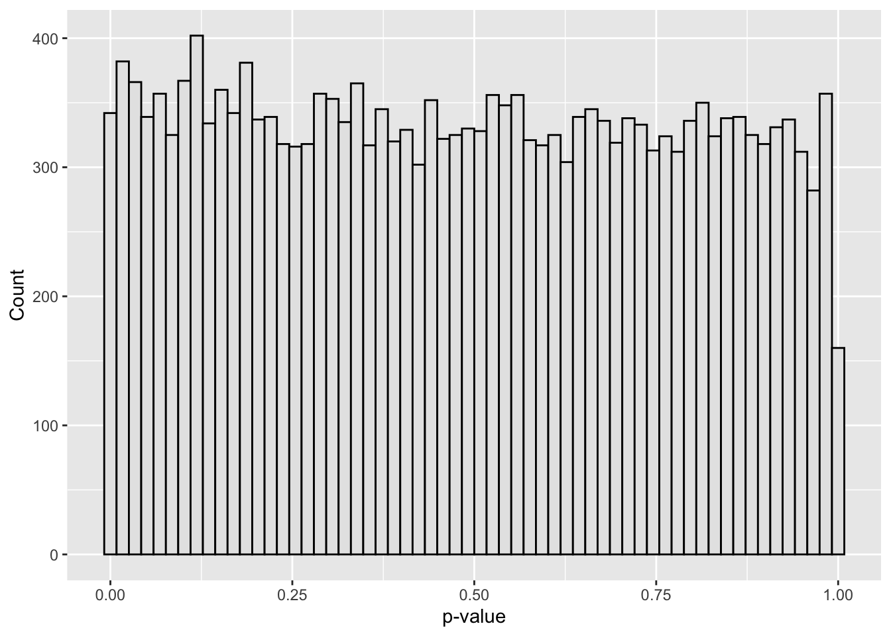

set.seed(8878)
library(ggplot2)
library(dplyr)
library(tibble)Assignment 05
PUBH 8878
Setup
Data for the assignment
We simulate m test statistics using the two-groups model discussed in lecture, then convert to two-sided p-values.
m <- 20000
pi0_true <- 0.95 # fraction of nulls
sigma_true <- 2.0 # sd under alternative
tau_true <- 1.0 # sd under null (standard normal null)
H <- rbinom(m, 1, 1 - pi0_true) # 1 = non-null, 0 = null
z <- numeric(m)
z[H == 0] <- rnorm(sum(H == 0), 0, tau_true) # null z
z[H == 1] <- rnorm(sum(H == 1), 0, sigma_true) # alt z
p <- 2 * pnorm(-abs(z)) # two-sided p-values
dat <- tibble(i = seq_len(m), z = z, p = p, H = H)A quick look:
dat |> summarize(
m = n(),
m0 = sum(H == 0),
m1 = sum(H == 1),
pi0 = mean(H == 0),
min_p = min(p),
med_p = median(p)
) |>
kableExtra::kable(digits = 3)| m | m0 | m1 | pi0 | min_p | med_p |
|---|---|---|---|---|---|
| 20000 | 19010 | 990 | 0.951 | 0 | 0.486 |
ggplot(dat, aes(p)) +
geom_histogram(bins = 60, color = "black", fill = "grey90") +
labs(x = "p-value", y = "Count")
Problem 1: Some theory (20 pts)
(a) (4 pts) Prove that if a continuous test statistic T has null cdf F_0, then the one-sided p-value P = 1 - F_0(T) is Uniform(0,1) under the null. (Hint: use the probability integral transform.)
(b) Show that \operatorname{BFDR}(A)=\dfrac{F_0(A)\pi_0}{F(A)}. Then, let \mathrm{lfdr}(z)=\Pr(H=0\mid Z=z)=\dfrac{\pi_0 f_0(z)}{f(z)}. Prove the averaging identity \operatorname{BFDR}(A)=\mathbb{E}\big[\,\mathrm{lfdr}(Z)\mid Z\in A\,\big]. (Hint: write both numerator and denominator as integrals over A.)
(c) (3 pts) Briefly describe the key difference between FDR control at level q (e.g., BH) and reporting local false discovery rates (lfdr) for individual hypotheses.
Problem 2: Implement BH step‑up from scratch (20 pts)
We will implement the BH decision rule and compare to built‑ins.
(a) (10 pts) Write an R function bh_from_scratch(p, q) that:
- orders the input vector of p-values
p - finds k=\max\{i:\ p_{(i)} \le (i/m)q\} (take k=0 if the set is empty)
- returns a list with
$k, the BH threshold \alpha^* = (k/m)q, and a logical vectorrejectof lengthmmarking rejections.
Then run it at q = 0.10 on the vector dat$p. Produce a plot overlaying the ordered p_(i) and the BH line (i/m)q, and mark the chosen cutoff.
(b) (5 pts) Compare your rejections to p.adjust(dat$p, method="BH") <= 0.10. They should match exactly. Report the number of discoveries.
(c) (5 pts) Report the empirical FDP on this simulated data, Q = V/\max(1,R), using the latent truth H (remember: H==0 means null). Comment briefly.
Problem 3: Simulation study of BH FDR control (20 pts)
Design a small simulation to assess how the BH FDR behaves as a function of \pi_0 and the alternative strength.
- Fix
m = 5000,q = 0.10. For each \pi_0 \in \{0.6, 0.8, 0.9, 0.95\} and alternative sd \sigma \in \{1.5, 2.0\}:- simulate 200 independent datasets via the two-groups model with
tau = 1, - apply BH at level
q, - record the FDP for each replication using the latent truth.
- simulate 200 independent datasets via the two-groups model with
- Plot the average FDP and its simulation SE versus \pi_0 for each \sigma. Does BH control FDR near \pi_0 q under independence?
Problem 4: Empirical-Bayes BFDR from p-values (20 pts)
We will estimate the Bayesian FDR at a threshold p_t using
\widehat{\operatorname{BFDR}}(p_t) = \frac{\widehat{\pi}_0 \, p_t}{\widehat{F}(p_t)}, \qquad \widehat{F}(p_t)=\frac{1}{m}\sum_{i=1}^m \mathbf 1\{p_i \le p_t\}.
(a) (8 pts) Implement the Storey (2002) estimator
\widehat{\pi}_0(\lambda)=\frac{\#\{p_i>\lambda\}}{m(1-\lambda)},\qquad \lambda\in[0.5,0.95],
and report the smoothed estimate \widehat{\pi}_0 obtained by fitting a cubic spline or loess of \widehat{\pi}_0(\lambda) versus \lambda and evaluating at \lambda=1
(b) (6 pts) For a grid of thresholds p_t\in\{10^{-6},10^{-5},\dots,10^{-1}\}, compute \widehat{\operatorname{BFDR}}(p_t) and plot it as a function of p_t.
(c) (6 pts) Pick the smallest p_t whose estimated BFDR is \le 0.10 and report how many discoveries you would make at that threshold. Compare to the BH discoveries at q=0.10 from Problem 2.
Compare your \widehat{\pi}_0 to the estimate from the qvalue package and report both.
Problem 5: q-values and discovery sets (10 pts)
Compute qvalues <- qvalue::qvalue(dat$p) and:
(a) (4 pts) Report how many features have qvalues$qvalues <= 0.10. Compare to BH at q=0.10 and to your BFDR-based threshold in Problem 4.
(b) (6 pts) Sort features by their q-values (ascending). Let \bar q(k) be the running mean of the first k q-values. Plot \bar q(k) versus k and mark the largest \hat k with \bar q(\hat k)\le 0.10. Explain why selecting the first \hat k features is a reasonable discovery rule.
Problem 6: Brief discussion (20 pts)
Write a concise paragraph (6–10 sentences) addressing the following:
- How do BH, BFDR thresholding, and q-value selection compare on these data in terms of number of discoveries and estimated error rates?
- What assumptions underlie BH control, and how might LD (dependence among tests) in GWAS affect it?
- What are potential pitfalls of estimating \pi_0 from the empirical distribution of p-values?